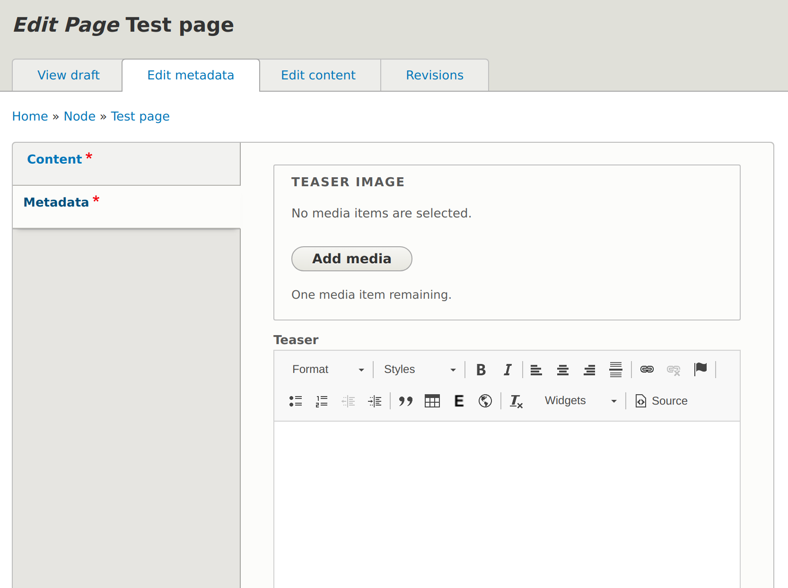

Ultimate guide to Layout Builder
Who?
Saul Willers
Senior Backend Developer @ PreviousNext
drupal.org/u/fenstrat
What?
- Best practice UI/UX
- Performance
- Gotchas
What is Layout Builder?
- Layout all your content
- Stable in Drupal 8.7+
- Works on all content entities
Data modelling
- Excellent for custom layouts
- Structured data still very important

Collection of fields in a block
Block theming
Blocks need to accommodate different contexts
Handling complex edit forms
- Default off canvas tray is small
- LB Modal
Restrict available options
Restrict layout options
- LB Library
- Pre-defined layouts
- Restrict editor choices
Style a section/block
LB Everywhere
Restrict blocks
Patches for performance
- #2981889 Recursive rendering (committed! >= 8.7.9)
- #3043330 Only create blocks for LB enabled entities
Translation
- Not yet supported in core
- 2 contrib options:
Form blocks break layout save
- Parent form never saves
- #3045171 Ongoing work in core
Concurrent editing is confusing
- Both editors see changes other user is making
- #3025231 Ongoing work in core
API access
- No data is exposed
- #2942975 Ongoing work in core
Resources
Summary